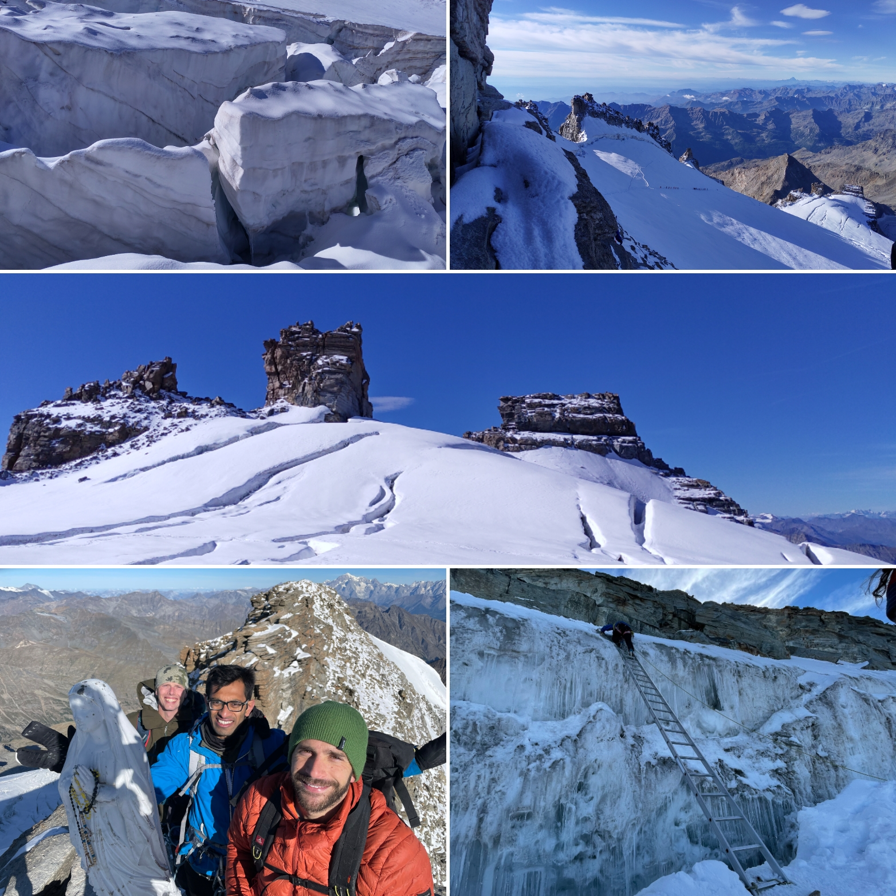
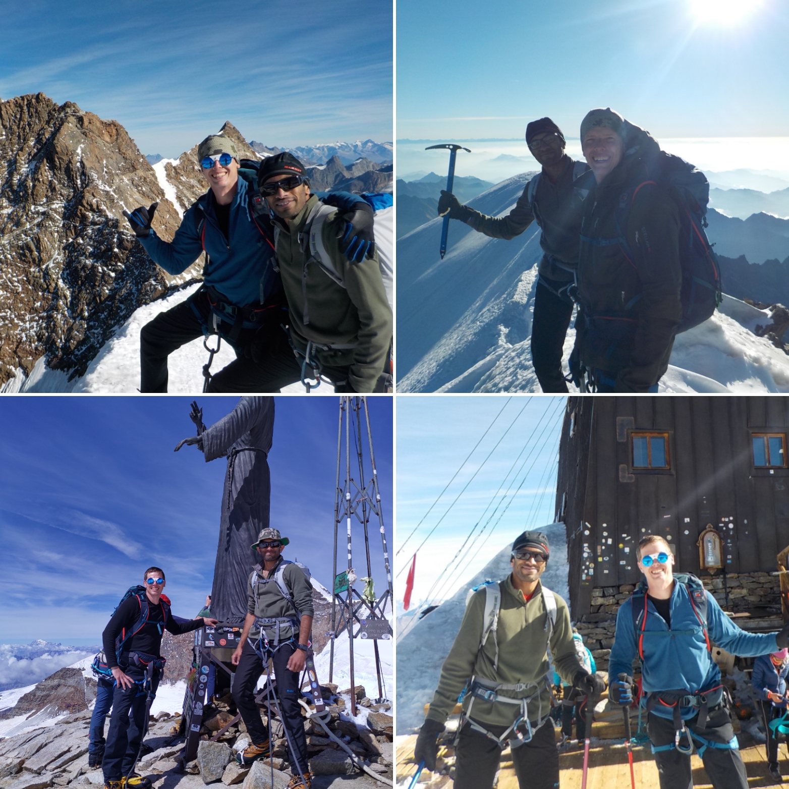

The alpine summer of 2022 was spent on Gran Paradiso 4061m and Monte Rosa, in Pennine Alps (Parrotspitz 4432m, Zumsteinspitze 4563m, Signalkuppe 4554m, Balmenhorn 4167m).
Gran Paradiso is the highest peak in Italy while the Monte Rosa massif is located on the border between Switzerland and Italy, and it is home to some of the highest peaks in the Alps. It has challenging and technical climbs, with steep ascents and descents, narrow ridges, and rocky terrain, as well as the climbs with walking tours with less technical climbs. Matterhorn is a well-known peak here. Lately, with summers being more warmer, many crevasses had opened up and the original route had to be changed at lot of places. Temporary ladders were setup to cross the crevasses on Gran Paradiso.

Gran Paradiso served as a great acclimatization for the Monte Rosa traverse; 2 days at 2,750 meters (Chabod hut) and the Gran Paradiso summit at 4061m.
The first peak (on Monte Rosa) we climbed was Parrotspitz, which is a rocky peak with a sharp summit ridge. We climbed a grade 3/4 rock-climb with our crampons and made it to the ridge-top. From there, we made our way to Zumsteinspitze, which is the second-highest peak in the Monte Rosa massif, and 5th highest in Alps. The climb to Zumsteinspitze was particularly challenging, with steep snow and ice slopes that required careful footing and use of crampons and ice axes.
After reaching the summit of Zumsteinspitze, we continued on to Signalkuppe. The highest mountain hut in Europe, Capanna Regina Margherita is situated on top of this mountain. The view from the top was simply breathtaking, with panoramic views of the Alps stretching out as far as the eye could see. We took a few moments to catch our breath and savor the moment before continuing on to the final peaks of the traverse: Balmenhorn. The climb to Balmenhorn was relatively easy compared to the other peaks, but it still required careful footing while approaching the small rocky cliff.

Along the way, we had the pleasure of spotting some ibex and mountain goats in their natural habitat, which added to the already exhilarating experience. Overall, although not as high as the Himalayas, it was a remarkable and unforgettable journey, filled with incredible sights and experiences that left me with a newfound appreciation for nature.